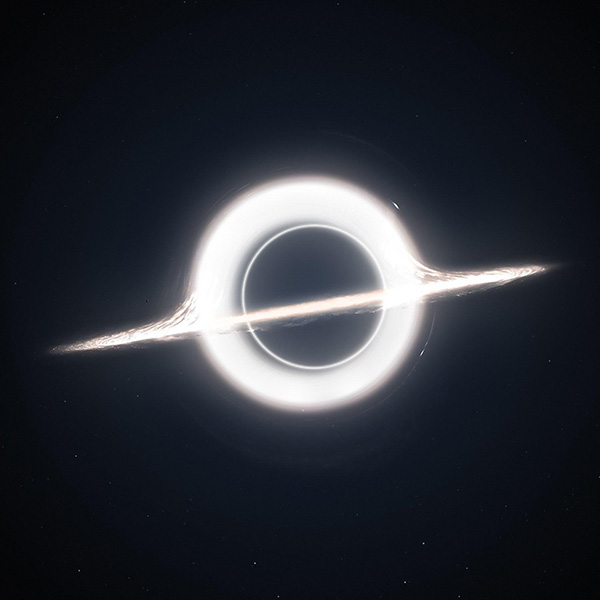
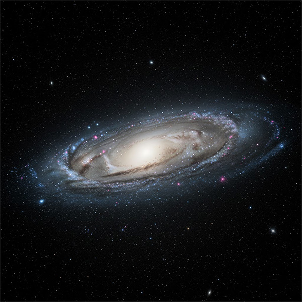
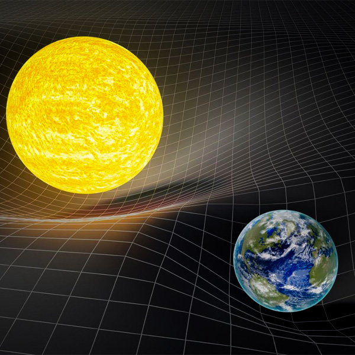
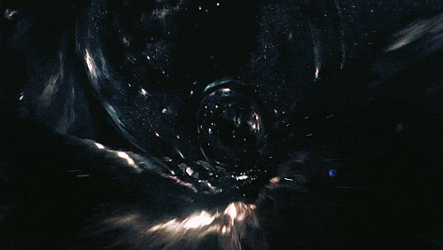
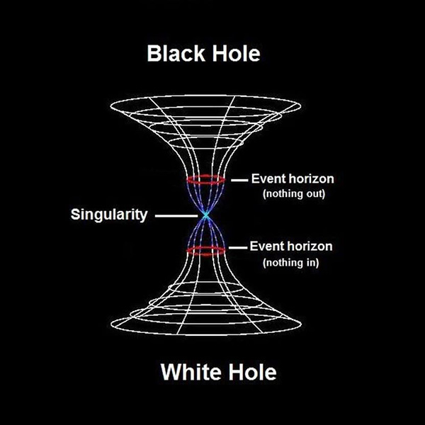
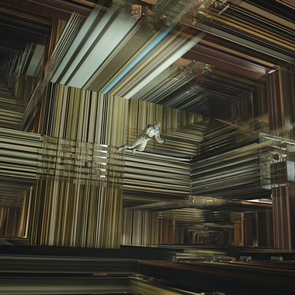

O cinema despertou nossa curiosidade.
Agora é sua vez de explorar o universo de verdade.
O que é um buraco negro?
Um buraco negro é uma região do espaço onde a gravidade é tão intensa que nada consegue escapar, nem mesmo a luz. Em Interestelar, o buraco negro chamado Gargantua é representado com um disco de luz ao redor, causado pela matéria sendo puxada em alta velocidade.

O que é uma galáxia?
Galáxias são enormes conjuntos de estrelas, planetas, poeira e gás, todos unidos pela gravidade. A Via Láctea é a galáxia onde vivemos. No filme, as viagens intergalácticas são possíveis por meio do buraco de minhoca.

Tempo vs Gravidade (Dilatação do tempo)
A teoria da relatividade mostra que quanto mais forte a gravidade, mais devagar o tempo passa. Isso explica a cena em que os personagens passam 1 hora em um planeta, enquanto 7 anos se passam na Terra. Esse é um efeito real e comprovado pela física.

O que é um buraco de minhoca?
É uma passagem teórica que conecta dois pontos distantes do espaço-tempo, funcionando como um “atalho”. No filme, a NASA descobre um buraco de minhoca perto de Saturno, que permite viajar para outra galáxia.

O que é uma singularidade?
É o ponto central de um buraco negro onde a densidade e a gravidade se tornam infinitas. No filme, Cooper entra na singularidade de Gargantua, levando à famosa cena do “tesseract”.

O que é o tesseract?
É uma representação visual de uma dimensão extra. No filme, Cooper acessa uma estrutura tridimensional que representa o tempo como um espaço físico, permitindo que ele interaja com o passado da filha, Murphy.
